Three groups of texture
This lecture is a guide to the different forms of ore. There are three groups of texture, and you should keep them separate. Breccias are broken rock. How the pieces are broken, moved and cemented tells you what broke them. Ore classifications by abundance and layering (massive, semi-massive, disseminated, banded) tell you how much ore there is, and whether it formed at the same time as its host rock. Veins are cracks that opened and filled with minerals. Their internal structure and cross-cutting relationships record a sequence of events. In addition, metamorphism can recrystallise sulphides and move them, which makes new textures.
Why is this so important? Because textures tell you the order of events. In the Tuena goldfield, an honours project found five generations of veins, and only the last one contained gold. If you cannot tell the veins apart, you do not know which one to follow. Every description you write in an ore suite is practice for this. slide 37 and lecture recording, 18 Sep
Breccias: broken rock, and what broke it
simply means broken rock. It has fragments of rock or mineral grains, usually angular, called . The clasts sit in a finer-grained or , which may or may not look like the clasts. In impact breccias the matrix can even be glass. Breccias are important because they are very common in ore systems. Some deposits are completely inside breccias. Examples are solution-collapse deposits, some sediment-hosted uranium deposits, many epithermal and porphyry deposits, and supergene iron and manganese ores. Broken rock is permeable, and fluids flow where the rock is permeable.
The first way to classify a breccia is by what broke the rock. There are six options: sedimentary, structural (fault), magmatic, volcanic, hydrothermal and impact. For any breccia, make three observations and work backwards: (1) the shape and sorting of the clasts, (2) how far the clasts have moved and rotated, and (3) what the matrix is made of. slides 2 and 3
- Six breaking agents: sedimentary, structural (fault), magmatic, volcanic, hydrothermal, impact.
- Read clast shape and sorting, movement and rotation, and the matrix.
Sedimentary breccias: chert and collapse
The simplest sedimentary breccias contain . These are pieces of partly hardened sediment that a later current tore up and deposited in the next layer. But the two most important sedimentary breccias, by volume, are chert breccias and solution-collapse breccias.
Chert breccias form during diagenesis, when quartz replaces carbonate. The clasts and the matrix are both microcrystalline quartz, and they formed at the same time. So chert breccias are found in dolomitic sequences. The rock is broken when some of the carbonate below dissolves, or by tectonics. In chert-dolomite sequences, dolomite replaces chert with depth, at about 1000 m. Chert breccias form most easily in impure limestones. slides 5 to 7
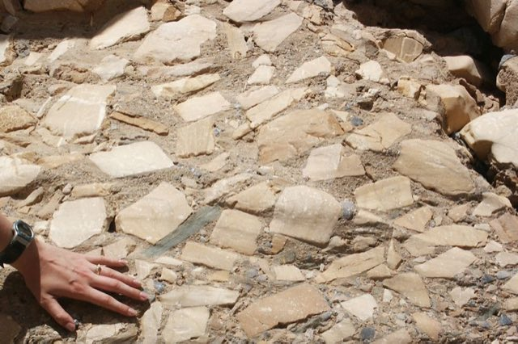
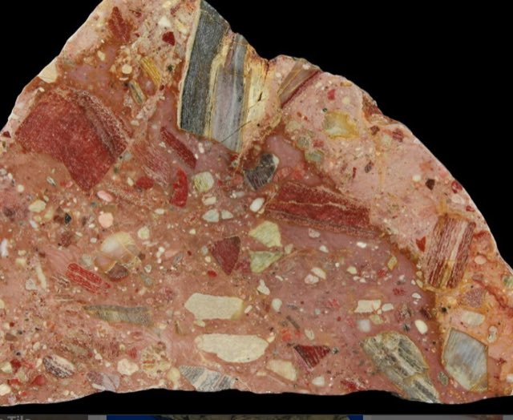
The slab has clasts of several colours and textures, and a red matrix. Did the red colour form during the brecciation?
Show what I see
The different clast colours are different generations or textures of chert, which all replaced carbonate. The red colour is almost certainly hematite from later weathering and oxidation. It did not form during the brecciation. Always separate the event that made the texture from the later events that coloured it (Lecture 2).
Solution-collapse (karst) breccias form when groundwater dissolves a soluble layer below. The soluble layer can be evaporites (gypsum, anhydrite, halite, sylvite) or carbonates (dolomite, calcite). The insoluble rocks above it lose their support and collapse. Look for three diagnostic features: V-shaped sags where a cave roof collapsed, breccia pipes with beds that dip inwards, and sharp, flat bases where the dissolved layer used to be. These breccias are the classic host for Mississippi Valley type (MVT) lead-zinc deposits. This is because the collapse makes open, permeable spaces, and later ore fluids fill them. Watch one form below.
Dissolve the evaporiteready
A layer of gypsum is below insoluble sandstone and shale. Press the button.
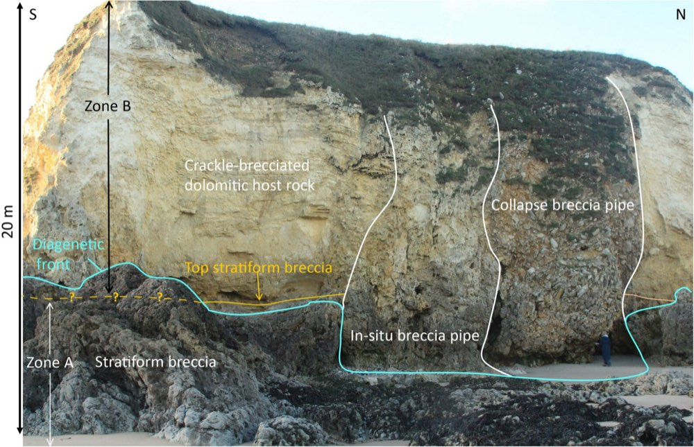
Find the features that you saw in the animation in this real quarry face. Which labelled body has collapsed beds that dip inwards? Where would you expect the flat base?
Show what I see
The collapse breccia pipes on the right are the V-shaped, chaotic bodies where roof rock fell in. The in situ breccia pipe is broken, but the pieces have hardly moved. At the base, the stratiform breccia marks the level of the dissolved layer: a flat, sharp floor. Compare this with the animation: the same shapes, but in real rock.
Fault breccias: crackle, mosaic, chaotic
Fault (structural) breccias form in the upper crust, when two fault blocks grind against each other. They are classified by how far the clasts have moved. You can measure this with two things: the percentage of large clasts (over 2 mm), and how well the clasts still fit together. A crackle breccia has almost no rotation and is 75 to 100 per cent large clasts. A mosaic breccia has more separation and rotation, and is 60 to 75 per cent large clasts. A chaotic breccia no longer fits together at all, and is 30 to 60 per cent large clasts. Crackle breccias can be divided further by how they cracked: attrition (slow wearing by friction), distributed crush (many small fractures forming over time) and implosion (high fluid pressure in the pores). slides 10 and 13
A is a special case. It forms almost only by dilation: the pieces moved apart but did not rotate. So they fit back together like a puzzle, and minerals fill the gaps later. The Mount Gunson sample at the top of this page is a jig-saw breccia. Increase the strain below and see how the classification changes.
Breccia strain machinecrackle
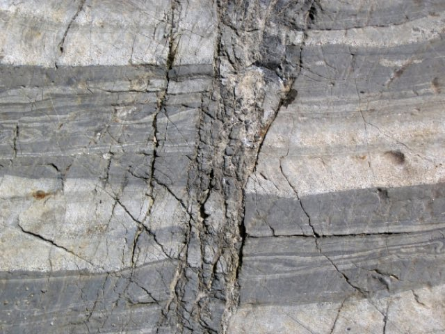
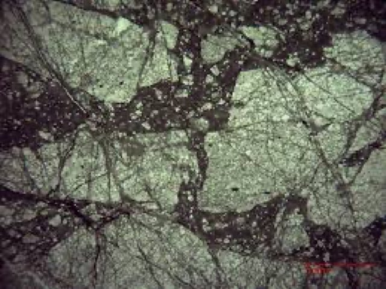
In A, how do you know that the broken zone is a fault and not a sedimentary breccia? Classify B.
Show what I see
A: the broken zone is a narrow, steep band that cuts straight across the shale and sandstone beds. The beds on each side are not broken. This shape shows fault movement. B: the pale blocks are large and angular, and they still almost fit together. There are only thin seams of matrix between them. This is a crackle breccia, with very little rotation.
Magmatic and volcanic breccias
Magmatic breccias form inside a magma that is crystallising but is not yet solid. The magma breaks while it is still plastic. This happens either because gases and water separate from the magma as it rises, or because tectonics moves the magma chamber. The escaping fluids can deposit ore minerals as their pressure drops and they react with the wall rock. So magmatic breccias are common in epithermal and porphyry systems. slide 15
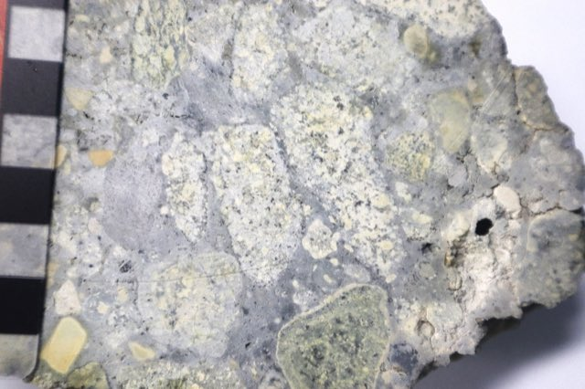
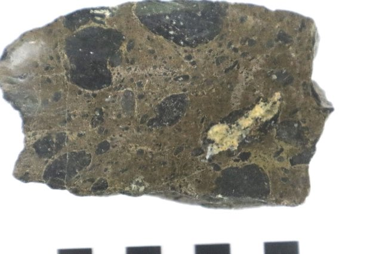
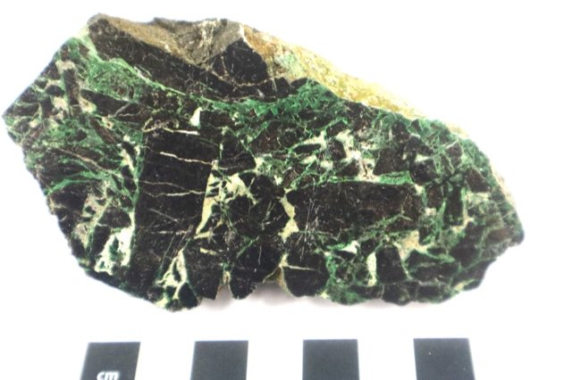
In two of these breccias, the matrix was molten. Which two? What is the green cement in C?
Show what I see
- A: subrounded andesite clasts, some with reaction rims. They broke while the magma was still partly liquid, and they reacted with it.
- B: well-rounded clasts of the host norite in a sulphide matrix. The sulphide was also a melt (a separate sulphide liquid), so the matrix was molten.
- C: chromitite that broke while it was still magmatic. Later fluids cemented it and grew green uvarovite (chromium garnet) and grossular.
So A and B had molten matrices. The cement in C formed later, from fluids. Rounded clasts and reaction rims tell you the setting was hot and magmatic.
Volcanic breccias are mostly angular volcanic fragments larger than 2 mm in a finer matrix. Some have non-volcanic fragments in a volcanic matrix. There are three groups, and you can sort them by what supplied the energy.
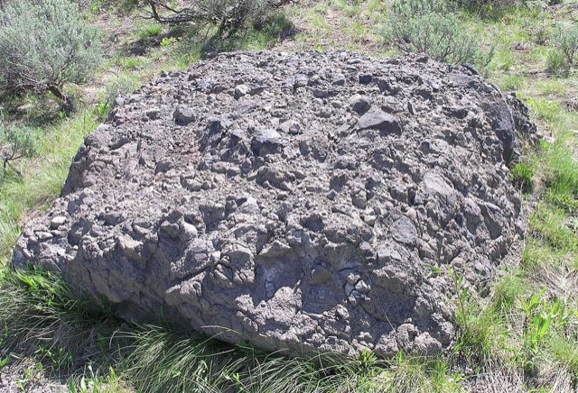
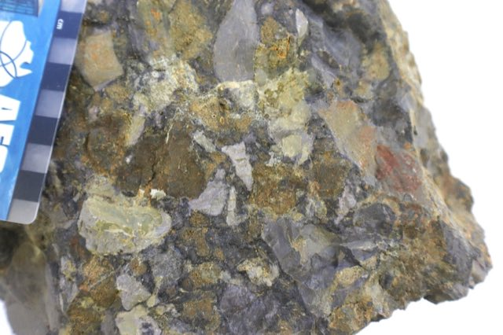
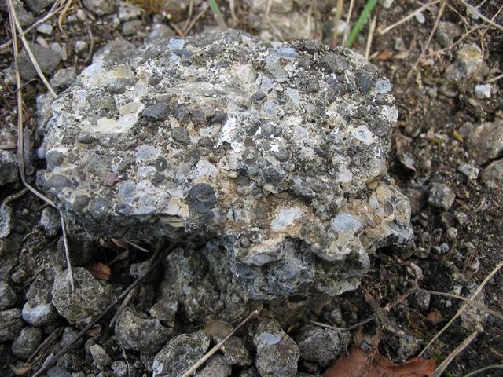
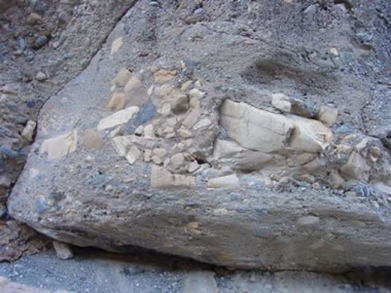
Which breccia was formed by gravity, not heat? What is unusual about the clasts in B?
Show what I see
D formed by gravity. It has a huge range of clast sizes and is very poorly sorted. It is a debris flow (epiclastic). B is a phreatic breccia. Lava met groundwater, and the steam explosion broke the country rock. The mixture was pushed upwards as a breccia dyke. This is why most of the clasts in B are country rock, not volcanic rock. A is a block breccia, formed when a lava flow broke itself. C is pyroclastic: many rock types in an ash matrix.
Hydrothermal breccias: rock broken by fluid pressure
Hydrothermal breccias form by . Fluid separates from a magma and builds up high pressure inside fractures. The stress around a rock (confining stress) holds it together. But what really matters is the , which is the confining stress minus the fluid pressure. As fluid pressure rises, the effective stress falls towards zero. When the fluid pressure becomes greater than the confining stress plus the rock's small tensile strength, fractures grow, often explosively. Near the surface the confining stress is low, so less pressure is needed. If the pressure in the system suddenly drops (for example by boiling, or when a fault opens), the fluid expands quickly and blows the rock apart. The matrix is usually quartz, carbonate or . The clasts are usually altered, because the fluid that broke them also reacts with them. slide 24 and lecture recording, 18 Sep
Pressure cookerintact
Choose a depth, then build fluid pressure.
Teaching model: confining stress is taken as lithostatic, about 27 MPa per km, plus 10 MPa tensile strength.
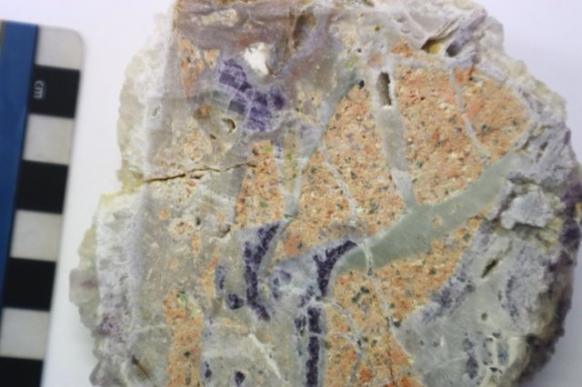
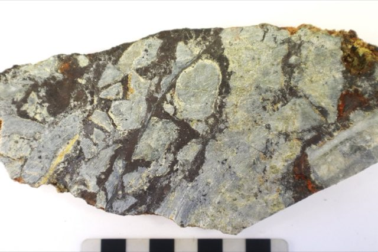
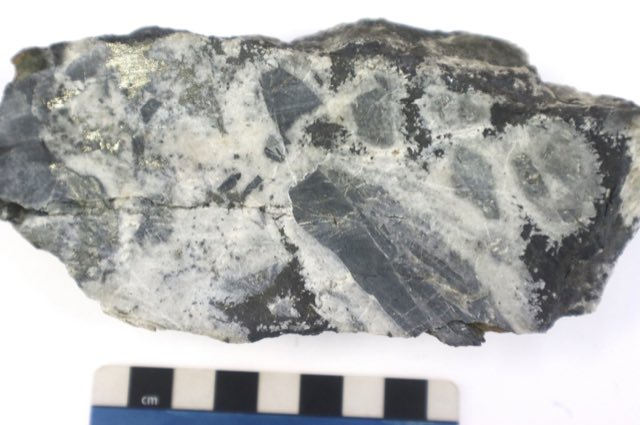
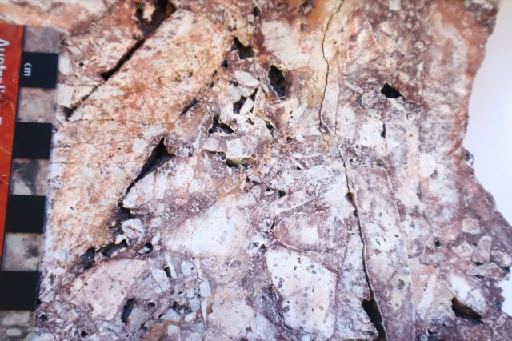
In which of these is the cement itself ore? In D, what is the matrix made of?
Show what I see
- A: granite broken by an explosion, then cemented by fine silica (chalcedony) and purple fluorite. The escaping gases and fluids carried these minerals.
- B: granite clasts cemented by sphalerite. The cement is the ore. You can see that the clasts are altered.
- C: quartz crystals grew around the clasts first. Then stibnite (antimony sulphide, the ore) filled the gaps.
- D: a milled-matrix breccia. Strongly altered granite clasts sit in granite that the fluid crushed to powder. The sulphides that were there have oxidised to goethite.
B and C have ore as the cement. Some epithermal deposits are completely hosted in breccia, not veins. Kelian in Kalimantan is the classic example.
Impact breccias
When a body from space (such as a meteorite) hits the Earth, it can melt the surface and form a glassy impact breccia. Its shock wave can also melt rock deep in the crust almost instantly. This melt cools very quickly to form ("false glass"), which forms dark veins injected through broken rock. The Vredefort Dome in South Africa is the best example: granite that crystallised about 10 km deep was partly melted by the shock. Impact breccias are almost never related to ore. There is one famous exception in Canada, which you will study in the magmatic deposits lectures. slide 27 and lecture recording
Breccia ID challenge
Here are nine real samples from the lecture. Use the clast shape and sorting, the rotation, and the matrix to classify each one. If you get stuck, read the hint. It tells you what to look at, not the answer.
What broke this rock?0 / 9
Massive, semi-massive, disseminated
The simplest way to classify ore is by how much of the rock is ore mineral. You can use it for a whole deposit, a lens or a hand specimen. Massive ore has more than 50 per cent ore minerals. Semi-massive ore has 10 to 50 per cent. Disseminated ore has less than 10 per cent. Most mines take massive and semi-massive ore. Disseminated material is usually treated as waste, like the host rock. The main exceptions depend on the commodity. Gold is almost always disseminated, because the grains are too small to see. At Thackaringa, disseminated pyrite is the target, because it contains a few per cent cobalt. slides 28 to 32
Estimating percentages by eye is an important field skill, and most people estimate too high. Practise with the chart below first.
Visual estimation chartsemi-massive
Drag to see what each percentage looks like.
Classify the ore0 / 6
- Massive: over 50% ore minerals. Semi-massive: 10 to 50%. Disseminated: under 10%.
- Most people overestimate percentages by eye: calibrate.
Banded ores: the best sign of syngenetic ore
Banded or layered ores have fairly continuous bands of one ore mineral, or bands where one mineral is dominant. When you see banded ore, think : the sulphide was deposited at the same time as the host sediment. Banded ores are most common in SEDEX deposits like Mount Isa and Lady Loretta, where sulphides collected together with mud in a closed basin. They are also common in VMS deposits, where fine sulphide grains fell from black smokers onto the seafloor. slide 33
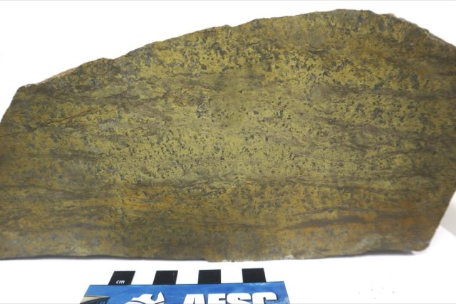
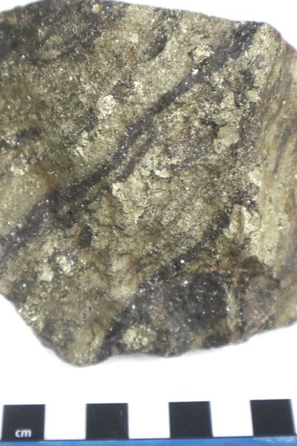
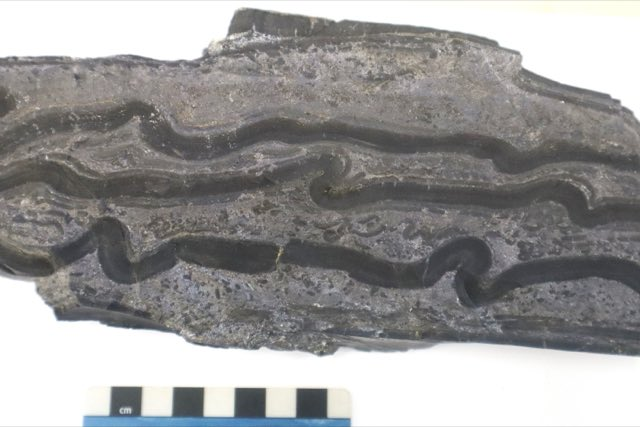
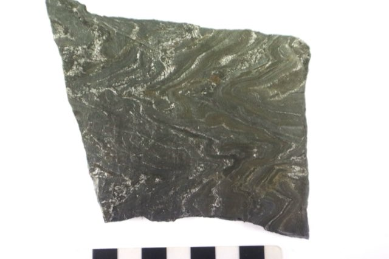
The bands in C are folded. Does this mean that later tectonics deformed the ore?
Show the reasoning
Not necessarily. At Mount Isa, the galena-sphalerite bands and the shale between them are folded together in small soft-sediment folds. These folds formed by compaction while the mud was still wet. The sulphide and the shale behaved as one wet sediment, which is more evidence that they formed together. Tectonic folds would also fold later veins, and would have the same axial plane across the whole outcrop.
Veins: cracks that opened and filled
A is a fracture that opened (dilated) and then filled with minerals. The shape of a vein is controlled by the regional and local stress field at the time it formed. Several generations of veins are normal in orogenic gold, epithermal and porphyry systems. Only one or two generations may contain ore, so describe every vein carefully: geometry (planar, sinuous), width and spacing, continuity (continuous, semi-continuous, discontinuous), orientation compared with bedding or structure, and mineralogy. slide 37
One rule explains all vein textures: the walls crystallise first and the centre crystallises last. This is because the centre is always the weakest part, so it keeps opening again. Watch three types of vein grow.
Vein growthcrack-seal
The vein types, with real samples
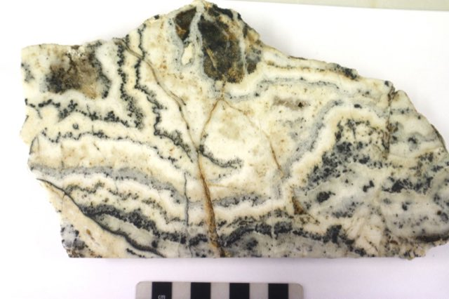
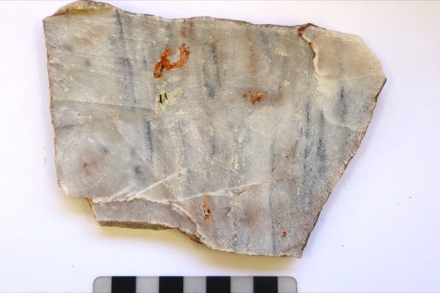
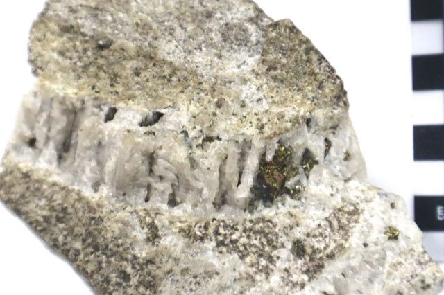
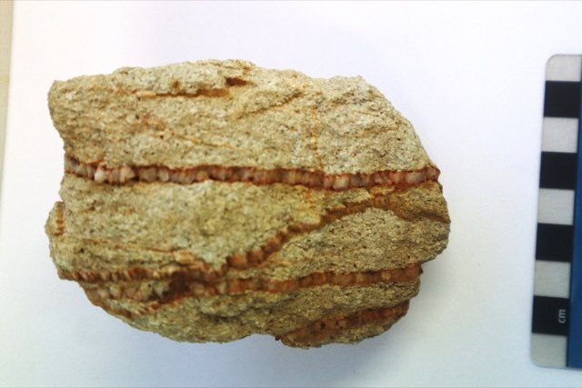
Which two are crack-seal veins? In which direction do the crystals point in C?
Show what I see
A and B are laminated crack-seal veins. They opened and sealed, again and again, many times. In A, the dark layers are molybdenite. B is a classic vein from an epithermal system, with bands of colourless quartz, off-white ankerite and black sulphide. That sample contained about 1500 g/t silver and 150 g/t gold. If you find ginguro banding while exploring an epithermal system, it is a very good sign. C and D are extensional veins. They are planar, and the crystals grew at right angles to the vein walls, because the rock simply pulled apart. In C, chalcopyrite, bornite and gold filled the vein later.
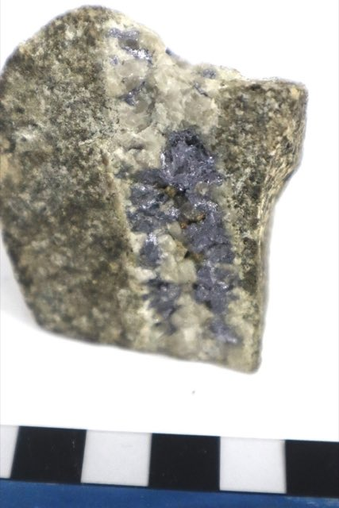
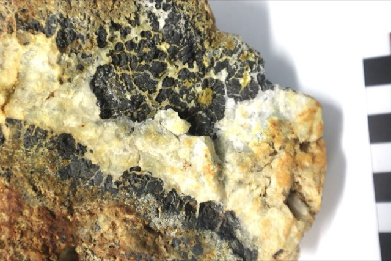
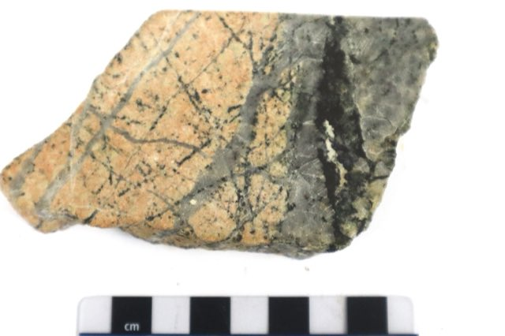
A and B are both space-fill veins, but the minerals formed in the opposite order. Explain this. Then explain why companies like C so much.
Show what I see
A has the usual order: quartz grew on the walls first, and molybdenite later filled the open centre. B has the opposite order: euhedral sphalerite crystals grew first into open space, and quartz later filled around them. You can tell because the sphalerite has crystal faces, and crystal faces only grow into open space. C is a stockwork: many crossing veins of early quartz and later quartz-chalcocite in brecciated, altered monzonite. Many veins mean many separate pulses of mineralisation, and this is what makes porphyries and epithermal systems large. Stockworks form by strong hydrofracturing, when fluid at very high pressure separates from magma close to the surface.
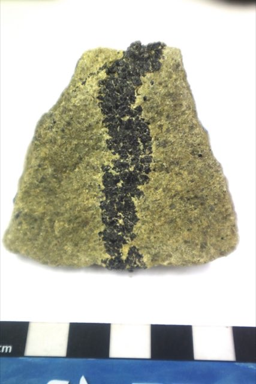
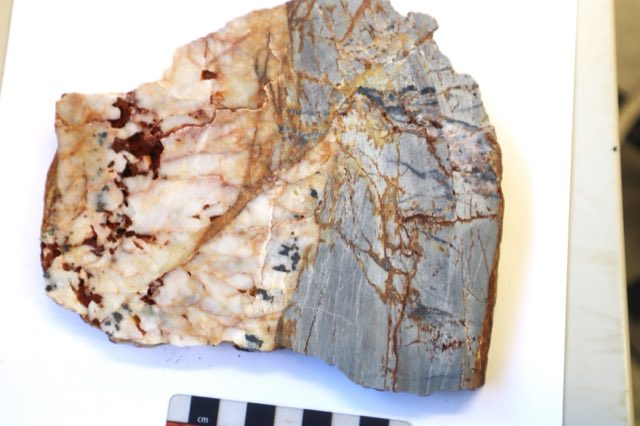
A is not hydrothermal at all. How did a chromitite vein form in dunite? What is the sequence of events in B?
Show what I see
A is a magmatic vein. Dense chromite crystals separated from the melt and collected together, forming a vein of only one mineral inside the silicate host. Magmatic veins are rare. The usual examples are chromitite in dunite, and pyrrhotite-pentlandite in ultramafic rock. B records two events. First, extension opened a large quartz-cassiterite vein. Later, shearing formed a shear vein that cuts across it.
- An offset vein is older than the vein or fault that offsets it.
- A folded vein existed before the folding.
- Sulphide aligned with a shear fabric grew during shearing.
Reading cross-cutting order
To find the relative age of features, use two rules from first year. A feature that cuts another feature is younger. A feature that offsets another feature moved after that feature formed. For ore textures, add a third rule: clasts are older than the matrix around them. With these three rules you can work out the history of the veins. Try it on this slab.
Oldest to youngestclick the features in order
Start with the oldest feature in the slab.
Metamorphism and durchbewegung
Heat and pressure also change sulphide ores. During metamorphism, sulphides are moved (remobilised) in two ways. They move physically, by dislocation flow along grain boundaries. They also move chemically, by dissolving in fluid and being deposited again. This works best at 350 to 500 °C, which is upper greenschist to lower amphibolite facies. Remobilised ores are usually much coarser grained than the original sulphides, and this is the easiest way to recognise them. Remobilisation can also form very high-grade branches of ore. The Consols mine at Broken Hill was a completely remobilised orebody, with masses of pure silver weighing more than a tonne. slide 47 and lecture recording, 21 Sep
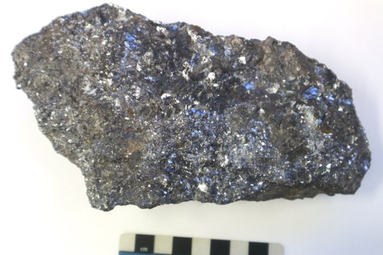
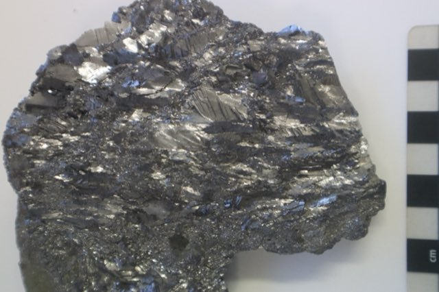
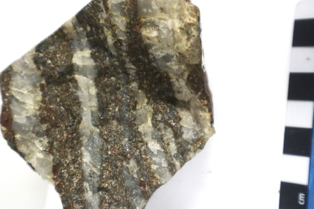
What does each sample tell you about what metamorphism did?
Show what I see
- A: very coarse, recrystallised galena-sphalerite. The coarse grain size shows remobilisation.
- B: strongly strained galena, stretched into long ribbons during deformation. Galena flows in a ductile way.
- C: this was a banded iron formation of hematite and chert. During metamorphism, sulphur was added, so the hematite changed to pyrrhotite and the chert recrystallised to coarse quartz. The banding survived, but the minerals changed.
Under greenschist conditions, most sulphides are ductile and flow like toothpaste. Pyrite is the exception: it stays brittle. Sometimes the host rock or old quartz veins are brittle, but the sulphide matrix is ductile. Then deformation breaks off pieces of the brittle material and rolls them around inside the flowing sulphide. This is called texture. Frank Vokes first described it in 1969, from metamorphosed VMS deposits in northern Norway. It has rigid, rotated clasts (usually siliceous host rock or vein quartz) in a matrix of ductile sphalerite and galena. Compare the two behaviours below.
Shear the oregalena matrix
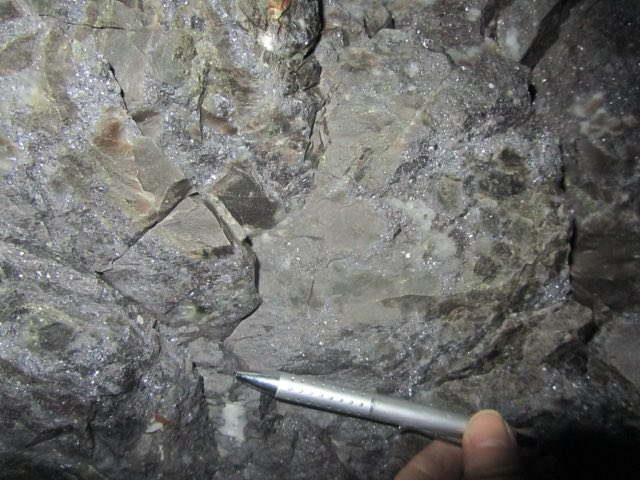
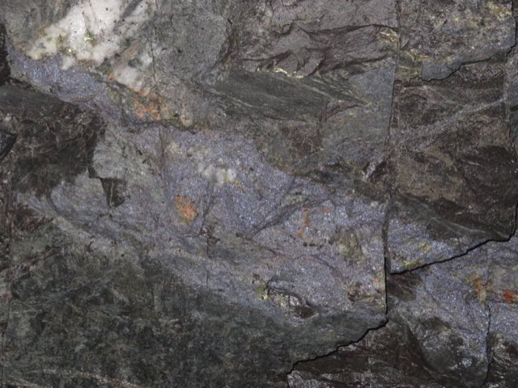
B has orange garnet in quartz clasts, inside fine galena. Why is it surprising to find garnet in a sulphide vein? What does it tell you?
Show the reasoning
Garnet needs high temperature. These quartz-garnet clasts formed deeper in the deposit, in hotter skarn conditions. Later they were broken off and carried up a shear vein inside ductile, fine-grained galena. So this one sample records three things: an early hot event, a later deformation, and galena flowing around the broken pieces. A shows the same texture, with bleached siltstone clasts in sphalerite-galena.
Core from the Cobar Basin: using everything together
Now read real core, as you will in the labs. Hera, near Nymagee in central NSW, is a Devonian zinc-lead-silver-gold deposit in a turbidite sequence (alternating siltstone and fine sandstone). It is structurally controlled and was deformed four times (D1 to D4). It also has local high-temperature skarn (garnet, wollastonite, diopside, above 600 °C), overprinted by widespread low-temperature skarn (tremolite). Federation, 6 km to the south, is similar but simpler: it has no skarn, and much of the ore is massive. slides 53 and 60
Sphalerite (ZnS) can contain iron in its structure. The more iron it has, the darker it is. Honey-yellow sphalerite has little iron, red sphalerite has a moderate amount, and dark brown to black sphalerite has a lot of iron. The iron content of sphalerite depends on the conditions where it formed. So the colour you see in core is useful data. Record it every time.
Log the core0 / 8
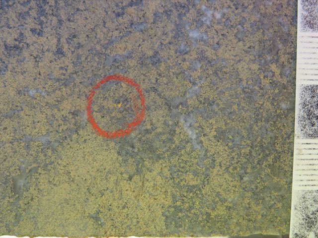
The red circle shows visible gold at Federation. What mineral is the gold in? Why is this useful to know when you log core?
Show what I see
The gold is in honey-coloured sphalerite with very little iron, and the sphalerite shows almost no deformation. At Federation, gold usually occurs with this honey sphalerite and with quartz-sphalerite-galena veins. So when you log core and see honey sphalerite, look more carefully with a hand lens. Deposits often have local zones of high strain or of a particular mineral assemblage. This is why you look at every scale.
Where this goes next
Lecture 4 looks at these same textures under the microscope in reflected light. There you will identify the ore minerals and how they grow together. Lecture 5 explains the stress fields that open veins and form fault breccias. The SEDEX and VMS lectures (L9, L10) return to banded ore in detail.
- Sphalerite colour is an iron gauge: honey-yellow low Fe, red moderate, dark brown to black high Fe.
- Very coarse sulphides in a late vein suggest remobilisation and recrystallisation.
Self-test
Answer each question out loud or on paper before you open it. If your answer was right, claim the ounces.
Glossary and flashcards
These are terms that the lecture expects you to know, or only explains briefly. Tap a dotted word in the text to see its meaning.